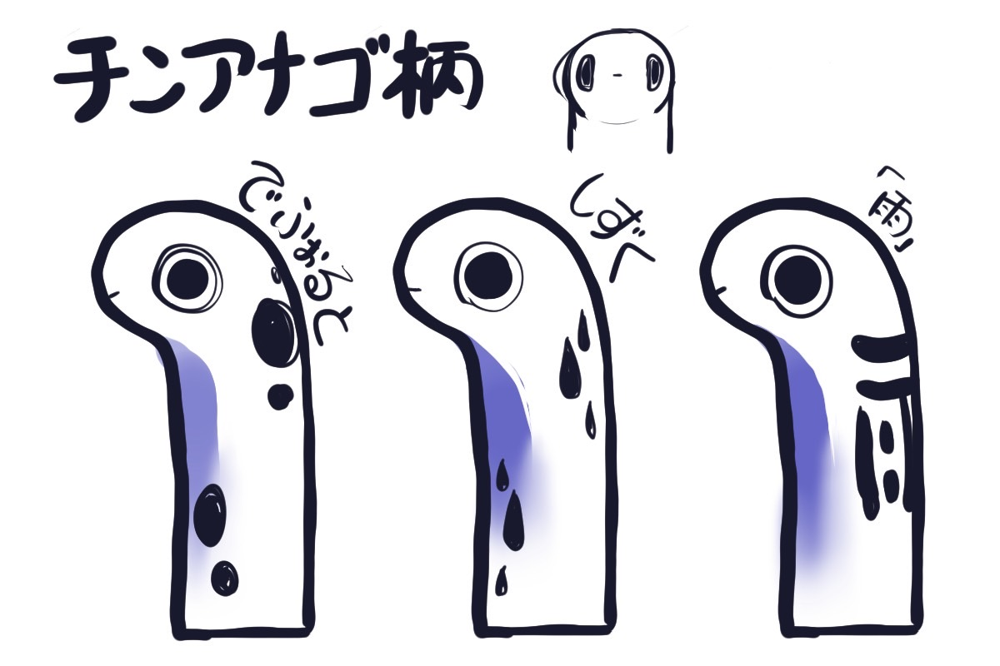
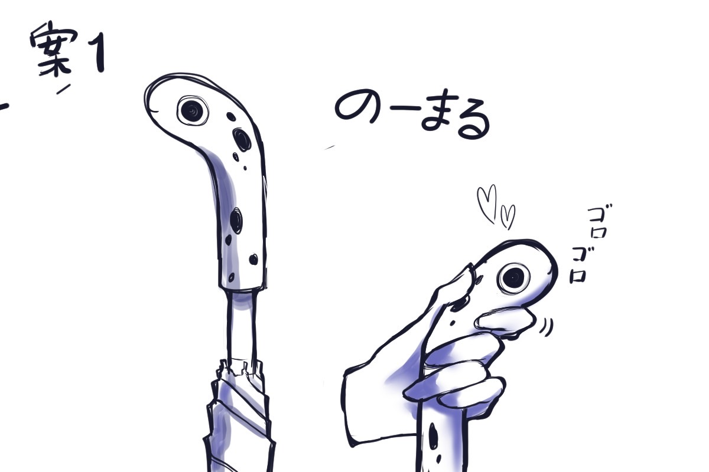
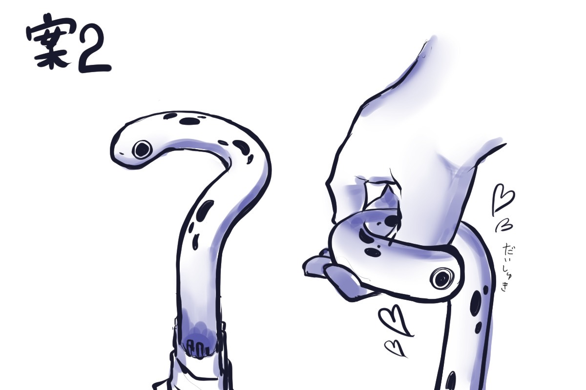
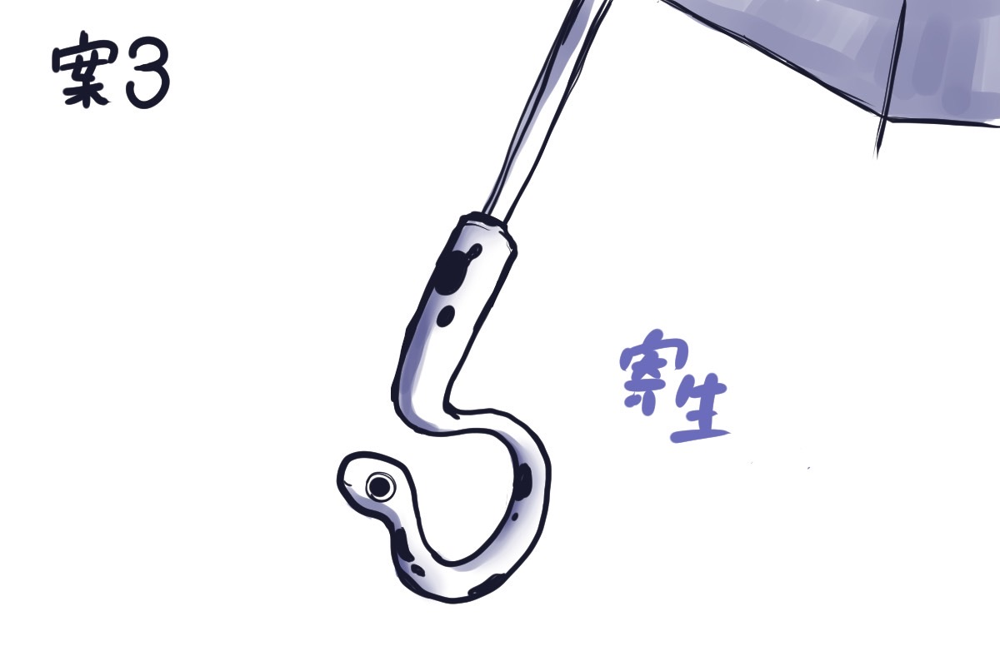

本作品は、JPHACKS 2022において「Bブロック準優勝」を受賞しました。
URL
背景
傘の窃盗問題は後を絶ちません。対策例として、傘立てにカギをつけるといった対策が施されていますが、特定の場所でしかその効果は発揮されません。 そこで、傘自らに防犯機能を搭載することでその欠点を補うことができるのではないかという考えのもと、本製品を開発しました。
製品紹介
「とらんとって」は、傘に自我を与え、持ち主以外からの盗難被害を防ぐデバイスです。 傘の持ち主以外が取っ手をつかんできたとき、取っ手のチンアナゴが叫んで危険を知らせてくれます。 また、チンアナゴを模倣したかわいらしいデザインによって傘に愛着がわき、防犯意識が高まることが期待できます。
デザインのコンセプトアート
 
 